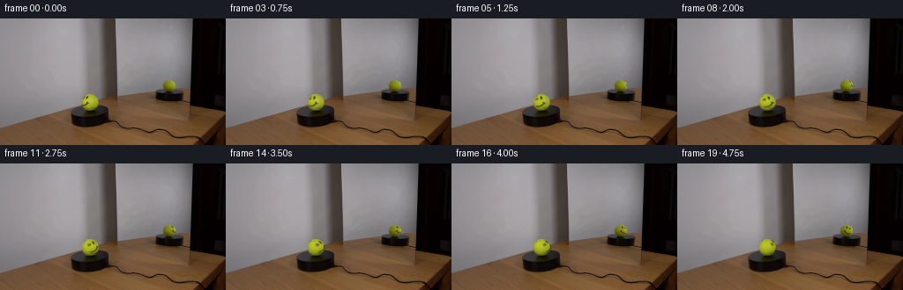

CODING AGENTS AS PIXEL WORLD MODELS
traex/GPT-6.1-Sol · 0120
点击播放 · 原生 RGB 像素
逐轮保存的候选
回放视频、检查图与代码变化。
每份候选均可单独播放。实际图片检查记录在下方工具轨迹中。
候选 01播放与检查图
点击播放 · 原生 RGB 像素

展开代码变化
--- 上一保存版本
+++ 本次保存版本
@@ -0,0 +1,182 @@
+from pathlib import Path
+import math
+import numpy as np
+from PIL import Image
+from scipy.ndimage import gaussian_filter, map_coordinates
+from scipy.optimize import least_squares
+import artifact_io
+
+ROOT = Path(__file__).resolve().parent
+H, W = 144, 256
+
+
+def sphere_fields(cx, cy, rx, ry, x, y):
+ u = (x-cx)/rx
+ v = -(y-cy)/ry
+ rho = u*u+v*v
+ z = np.sqrt(np.maximum(0, 1-rho))
+ return u, v, z, rho
+
+
+def clean_surface(im, geom, reflected=False):
+ yy, xx = np.mgrid[:H, :W]
+ cx, cy, rx, ry = geom
+ u, vn, z, rho = sphere_fields(cx, cy, rx, ry, xx, yy)
+ v = -vn
+ if not reflected:
+ eye = (((xx-98.3)/1.65)**2+((yy-89.65)/2.25)**2 < 1.15)
+ eye |= (((xx-95.0)/1.35)**2+((yy-90.05)/1.7)**2 < 1.25)
+ mouth = ((xx >= 92.5)&(xx <= 100.3)&(yy >= 93.8)&(yy <= 99.3))
+ face_area = eye | mouth
+ seam_area = (xx >= 99.7)&(xx <= 110.4)&(yy >= 87.3)&(yy <= 103.2)
+ else:
+ face_area = np.zeros((H,W), bool)
+ seam_area = (xx >= 186.0)&(xx <= 198.2)&(yy >= 70.8)&(yy <= 75.3)
+ # The illumination is fixed in the room, not painted onto the ball.
+ # Fit its smooth field using only the undrawn yellow felt.
+ known = (rho < .91)&(im[:,:,1] > 43)&(im[:,:,2] < 54)
+ known &= ~face_area
+ known &= ~(seam_area & (im[:,:,2] > (45 if not reflected else 30)))
+ a = np.stack([np.ones_like(u), u, v, z, u*v, u*u, v*v,
+ u*u*v, u*v*v, v*v*v], -1)
+ co=[]
+ for c in range(3):
+ aa=a[known]; bb=im[known,c]
+ init = np.linalg.lstsq(aa, bb, rcond=None)[0]
+ # Small ridge regularization keeps the extrapolation at the rim stable.
+ reg=np.array([0, .012, .012, .012, .035, .025, .025, .09, .09, .06])
+ fit = least_squares(lambda k: np.r_[aa@k-bb,reg*k], init,
+ loss='soft_l1',f_scale=2.3,max_nfev=150)
+ co.append(fit.x)
+ predicted=np.clip(a@np.asarray(co).T, 3, 230)
+ darkdiff=predicted[:,:,1]-im[:,:,1]
+ bluediff=im[:,:,2]-predicted[:,:,2]
+ ink_area=face_area & (darkdiff>7) & (rho<1.045)
+ seam_area=seam_area & (bluediff>7) & (rho<.99)
+ # Correct the smooth fit using the surrounding, unmarked felt, while
+ # retaining the photographic shading and silhouette elsewhere.
+ reliable=(rho<.94)&(~face_area)&(~seam_area)&(im[:,:,2]<54)&(im[:,:,1]>40)
+ for c in range(3):
+ residual=np.clip(im[:,:,c]-predicted[:,:,c],-9,9)
+ den=gaussian_filter(reliable.astype(float),2.05)
+ cor=gaussian_filter(residual*reliable,2.05)/(den+1e-7)
+ predicted[:,:,c]+=cor
+ predicted=np.clip(predicted,3,230)
+ clean=im.copy()
+ clean[ink_area|seam_area]=predicted[ink_area|seam_area]
+ ink=np.ones_like(im)
+ seam=np.ones_like(im)
+ ink[ink_area]=np.clip(im[ink_area]/clean[ink_area],.08,1.4)
+ seam[seam_area]=np.clip(im[seam_area]/clean[seam_area],.5,5.2)
+ return clean,ink,seam,ink_area,seam_area
+
+
+def sample(rgb, x, y):
+ return np.stack([map_coordinates(rgb[:,:,c], [y,x], order=3,
+ mode='constant',cval=1.,prefilter=True) for c in range(3)],-1)
+
+
+def generate():
+ original=np.asarray(Image.open(ROOT/'first_frame.png').convert('RGB'),dtype=np.uint8)
+ im=original.astype(float)
+ main=(102.20,95.25,9.85,9.70)
+ mirror=(191.60,76.48,7.12,7.01)
+ base1,ink1,seam1,mi,ms=clean_surface(im,main)
+ base2,ink2,seam2,ri,rs=clean_surface(im,mirror,True)
+ base=im.copy()
+ base[mi|ms]=base1[mi|ms]
+ base[ri|rs]=base2[ri|rs]
+
+ # Coordinates in the two photographic views of one spherical surface.
+ # Reflection changes handedness. The mirror looks at a roughly orthogonal
+ # side of the sphere; both views share the same rotating painted texture.
+ elev1=math.radians(20)
+ elev2=math.radians(16.2)
+ mirror_yaw=math.radians(88.7)
+ scale=4
+ patches=[]
+ for geom, reflected, elevation, viewyaw in [(main,False,elev1,0),
+ (mirror,True,elev2,mirror_yaw)]:
+ cx,cy,rx,ry=geom
+ x0=int(math.floor(cx-rx-1));x1=int(math.ceil(cx+rx+1))
+ y0=int(math.floor(cy-ry-1));y1=int(math.ceil(cy+ry+1))
+ yy,xx=np.mgrid[y0*scale:y1*scale,x0*scale:x1*scale]
+ xx=(xx+.5)/scale-.5;yy=(yy+.5)/scale-.5
+ u,v,z,rho=sphere_fields(cx,cy,rx,ry,xx,yy)
+ if reflected:u=-u
+ # Upward axis accounts for the fixed, slightly elevated camera.
+ py=v*math.cos(elevation)+z*math.sin(elevation)
+ pz=z*math.cos(elevation)-v*math.sin(elevation)
+ px=u
+ wx=math.cos(viewyaw)*px+math.sin(viewyaw)*pz
+ wz=-math.sin(viewyaw)*px+math.cos(viewyaw)*pz
+ valid=rho<=1
+ patches.append((x0,x1,y0,y1,wx,py,wz,valid,reflected))
+
+ # A very small, deterministic, advected felt microtexture. Its scale is
+ # below a video pixel and its amplitude is deliberately restrained.
+ rng=np.random.default_rng(120)
+ grain=gaussian_filter(rng.standard_normal((256,512)),.7,mode='wrap')
+ grain=grain/(grain.std()+1e-6)
+
+ def render(theta):
+ frame=base.copy()
+ for x0,x1,y0,y1,wx,wy,wz,valid,reflected in patches:
+ # Backward map a point on the stationary silhouette into the
+ # ball's material coordinates at the current angular position.
+ pX=math.cos(theta)*wx-math.sin(theta)*wz
+ pY=wy
+ pZ=math.sin(theta)*wx+math.cos(theta)*wz
+ xm=main[0]+main[2]*pX
+ vm=math.cos(elev1)*pY-math.sin(elev1)*pZ
+ zm=math.sin(elev1)*pY+math.cos(elev1)*pZ
+ ym=main[1]-main[3]*vm
+ rx=math.cos(mirror_yaw)*pX-math.sin(mirror_yaw)*pZ
+ rz=math.sin(mirror_yaw)*pX+math.cos(mirror_yaw)*pZ
+ rv=math.cos(elev2)*pY-math.sin(elev2)*rz
+ zz=math.sin(elev2)*pY+math.cos(elev2)*rz
+ xr=mirror[0]-mirror[2]*rx
+ yr=mirror[1]-mirror[3]*rv
+ ink=sample(ink1,xm,ym)
+ ink=np.clip(ink,.09,1.02)
+ # Ink exists only on the smiling, initially camera-facing side.
+ vis=np.clip(zm/.08,0,1)
+ ink=1+(ink-1)*vis[:,:,None]
+ ss1=sample(seam1,xm,ym)
+ ss2=sample(seam2,xr,yr)
+ w1=np.maximum(zm,0)**3
+ w2=np.maximum(zz,0)**3
+ ss=1+((ss1-1)*w1[:,:,None]+(ss2-1)*w2[:,:,None])/(w1+w2+1e-8)[:,:,None]
+ ss=np.clip(ss,.56,4.9)
+ lon=np.arctan2(pX,pZ)
+ lat=np.arcsin(np.clip(pY,-1,1))
+ gx=(lon/(2*math.pi)+.5)*511
+ gy=(lat/math.pi+.5)*255
+ noise=map_coordinates(grain,[gy,gx],order=1,mode='wrap')
+ texture=1+.0045*noise
+ factor=ink*ss*texture[:,:,None]
+ factor=np.where(valid[:,:,None],factor,1)
+ ph=(y1-y0);pw=(x1-x0)
+ factor=factor.reshape(ph,scale,pw,scale,3).mean((1,3))
+ frame[y0:y1,x0:x1]=base[y0:y1,x0:x1]*factor
+ return frame
+
+ init=render(0)
+ # Subpixel reconstruction loses a little of the original pixel sampling.
+ # This transient registration residual keeps the beginning continuous,
+ # without leaving a stationary duplicate of the rotating ink.
+ residual=im-init
+ frames=[original.copy()]
+ for index in range(1,20):
+ theta=math.radians(27)*index/4
+ f=render(theta)+residual*math.exp(-(theta/.22)**2)
+ frames.append(np.rint(np.clip(f,0,255)).astype(np.uint8))
+ frames=np.stack(frames)
+ artifact_io.save(frames,ROOT)
+ np.save(ROOT/'.tmp'/'clean.npy',base)
+ np.save(ROOT/'.tmp'/'reconstruction_residual.npy',residual)
+ return frames
+
+
+if __name__=='__main__':
+ generate()
候选 02播放与检查图
点击播放 · 原生 RGB 像素

展开代码变化
--- 上一保存版本
+++ 本次保存版本
@@ -24,8 +24,8 @@
u, vn, z, rho = sphere_fields(cx, cy, rx, ry, xx, yy)
v = -vn
if not reflected:
- eye = (((xx-98.3)/1.65)**2+((yy-89.65)/2.25)**2 < 1.15)
- eye |= (((xx-95.0)/1.35)**2+((yy-90.05)/1.7)**2 < 1.25)
+ eye = (((xx-98.35)/2.05)**2+((yy-89.65)/2.4)**2 < 1.15)
+ eye |= (((xx-95.2)/1.5)**2+((yy-89.9)/2.0)**2 < 1.25)
mouth = ((xx >= 92.5)&(xx <= 100.3)&(yy >= 93.8)&(yy <= 99.3))
face_area = eye | mouth
seam_area = (xx >= 99.7)&(xx <= 110.4)&(yy >= 87.3)&(yy <= 103.2)
候选 03播放与检查图
可观测工具轨迹
实际执行的命令与返回图片。
命令 1exit 0
/bin/bash -lc 'ls -la && cat prompt.txt && cat GENERATION_RULES.md'
命令 2exit 0
/bin/bash -lc "cat artifact_io.py && python - <<'PY'
from PIL import Image
import numpy as np
im=np.array(Image.open('first_frame.png'))
print('shape',im.shape)
# coarse quantized ascii colors brightness
for y in range(0,144,3):
s=''
for x in range(0,256,3):
r,g,b=im[y:y+3,x:x+3].mean((0,1))
if max(r,g,b)-min(r,g,b)<12: c=' ' if r>220 else '.' if r>160 else ':' if r>100 else '=' if r>55 else '#'
elif r>g*1.2 and r>b*1.2:c='R'
elif g>b*1.3 and r>b*1.3:c='Y'
elif b>r*1.15:c='B'
else:c='o'
s+=c
print(s)
PY"命令 3exit 0
/bin/bash -lc "python - <<'PY'
from PIL import Image
import numpy as np
im=np.array(Image.open('first_frame.png'))
# detailed color-symbol crops
for bounds in [(85,76,124,114),(176,62,211,93)]:
print('\\ncrop',bounds)
x0,y0,x1,y1=bounds
for y in range(y0,y1):
s=''
for x in range(x0,x1):
r,g,b=im[y,x].astype(float)
if g>r*.84 and g>b*1.5 and r>60:
c='@' if r+g<175 else 'o' if r+g<225 else '*' if r+g<275 else '+' if r+g<325 else '-' if r+g<375 else '.' if r+g<425 else 'Y'
elif max(r,g,b)-min(r,g,b)<15:
c=' ' if r>130 else ':' if r>90 else '=' if r>50 else '#' if r>25 else 'X'
elif r>g*1.2:c='R'
else:c='~'
s+=c
print(f'{y:3}',s)
print('matrix sample ball')
print(im[84:110:2,94:115:2,:].tolist())
PY"命令 4exit 1
/bin/bash -lc "python - <<'PY'
import numpy as np
from PIL import Image
im=np.array(Image.open('first_frame.png'))
for c,win in [('G',(91,85,115,106)),('B',(91,85,115,106)),('R',(91,85,115,106))]:
print(c)
j='RGB'.index(c);x0,y0,x1,y1=win
print(' '+''.join(str(x%10) for x in range(x0,x1)))
for y in range(y0,y1):
print(f'{y:3} '+''.join('0123456789ABCDEFGHIJKLMNOP'[min(25,int(im[y,x,j])/10.__int__())] for x in range(x0,x1)))
# green pixels bbox per row
for y in range(66,114):
xs=np.where((im[y,:,1].astype(float)>im[y,:,2]*1.7)&(im[y,:,0]>45)&(im[y,:,1]>50))[0]
if len(xs):print(y, [(int(a.min()),int(a.max())) for a in np.split(xs,np.where(np.diff(xs)>1)[0]+1) if len(a)])
PY"命令 5exit 0
/bin/bash -lc "python - <<'PY'
import numpy as np
from PIL import Image
im=np.array(Image.open('first_frame.png'))
for c,win in [('G',(91,85,115,106)),('B',(91,85,115,106)),('R',(91,85,115,106))]:
print(c)
j='RGB'.index(c);x0,y0,x1,y1=win
print(' '+''.join(str(x%10) for x in range(x0,x1)))
for y in range(y0,y1):
print(f'{y:3} '+''.join('0123456789ABCDEFGHIJKLMNOP'[min(25,int(im[y,x,j])//10)] for x in range(x0,x1)))
for y in range(66,114):
xs=np.where((im[y,:,1].astype(float)>im[y,:,2]*1.7)&(im[y,:,0]>45)&(im[y,:,1]>50))[0]
if len(xs):print(y, [(int(a.min()),int(a.max())) for a in np.split(xs,np.where(np.diff(xs)>1)[0]+1) if len(a)])
PY"命令 6exit 0
/bin/bash -lc "python - <<'PY'
from PIL import Image
import numpy as np
from scipy.ndimage import gaussian_filter
im=np.asarray(Image.open('first_frame.png')).astype(float)
# values in core as pairs green/blue marking
print(' '+''.join('%5d'%x for x in range(92,113)))
for y in range(86,106):
print('%3d '%y+' '.join('%2d/%2d'%(im[y,x,1],im[y,x,2]) for x in range(92,113)))
PY"命令 7exit 0
/bin/bash -lc "python - <<'PY'
import numpy as np
from PIL import Image
im=np.array(Image.open('first_frame.png'))
print('reflect')
for y in range(69,84):
print(y,' '.join(f'{im[y,x,0]:3d},{im[y,x,1]:3d},{im[y,x,2]:3d}' for x in range(183,201)))
PY"命令 8exit 0
/bin/bash -lc "python - <<'PY'
import scipy, numpy as np
from PIL import Image
from scipy.optimize import least_squares
im=np.array(Image.open('first_frame.png')).astype(float)
for cx,cy,rx,ry in [(102.25,95.15,9.65,9.55),(191.55,76.45,7.0,6.9)]:
y,x=np.mgrid[0:144,0:256];u=(x-cx)/rx;v=(y-cy)/ry;w=np.sqrt(np.maximum(0,1-u*u-v*v));mask=(u*u+v*v<.8**2)&(im[:,:,2]<55)&(im[:,:,1]>95)
A=np.stack([np.ones_like(u),u,v,w,u*v,u*u,v*v],-1)
for j in range(3):
fit=least_squares(lambda c:(A[mask]@c-im[mask,j]),np.linalg.lstsq(A[mask],im[mask,j],rcond=None)[0],loss='soft_l1',f_scale=3)
print(j,fit.x,'meanerr',np.median(np.abs(fit.fun)))
PY"命令 9exit 0
/bin/bash -lc "mkdir -p .tmp && python - <<'PY' import numpy as np cx,cy,R=102.15,95.2,9.6;e=np.deg2rad(18) for x,y in [(98.6,89.5),(95.3,90.4),(94.5,98.1),(98.5,95.2),(97,97.2),(101,94),(103,91),(107,90)]: u=(x-cx)/R;v=-(y-cy)/R;w=np.sqrt(max(0,1-u*u-v*v));Y=v*np.cos(e)+w*np.sin(e);Z=w*np.cos(e)-v*np.sin(e) print((x,y),'yaw,lat',np.rad2deg([np.arctan2(u,Z),np.arcsin(Y)])) PY"
命令 10exit 0
/bin/bash -lc "python - <<'PY'
import numpy as np
from PIL import Image
from scipy.optimize import least_squares
im=np.asarray(Image.open('first_frame.png')).astype(float)
y,x=np.mgrid[0:144,0:256];cx,cy,rx,ry=102.25,95.25,9.9,9.75
u=(x-cx)/rx;v=(y-cy)/ry;z=np.sqrt(np.maximum(0,1-u*u-v*v));
known=(u*u+v*v<.87**2)&(im[:,:,2]<55)&(im[:,:,1]>75)
exclude=((x<101)&(y<92))|((x<101)&(y>93)&(y<100))
known &= ~exclude
A=np.stack([np.ones_like(u),u,v,z,u*v,u*u,v*v],-1)
co=[]
for j in range(3):
c=np.linalg.lstsq(A[known],im[known,j],rcond=None)[0];c=least_squares(lambda c:(A[known]@c-im[known,j]),c,loss='soft_l1',f_scale=3).x;co.append(c)
base=A@np.array(co).T
print('coef',co)
for y0 in range(86,105):
print(y0,' '.join(f'{round(base[y0,x0,1]-im[y0,x0,1]):4}' for x0 in range(93,113)))
np.save('.tmp/base.npy',base)
PY"命令 11exit 0
/bin/bash -lc "python - <<'PY'
import numpy as np
from PIL import Image
from scipy.ndimage import gaussian_filter
im=np.asarray(Image.open('first_frame.png')).astype(float)
base=np.load('.tmp/base.npy')
Y,X=np.mgrid[:144,:256];u=(X-102.25)/9.8;v=(Y-95.3)/9.7;r2=u*u+v*v
face=(((X-98.3)/1.8)**2+((Y-89.9)/2.3)**2<1.8)|(((X-95.2)/1.1)**2+((Y-90.4)/1.1)**2<2)|((X>=92)&(X<=101)&(Y>=94)&(Y<=99))
ink=face & (base[:,:,1]-im[:,:,1]>17) & (r2<1.05)
seam=(im[:,:,2]-base[:,:,2]>13)&(X>99)&(Y>=87)&(Y<=102)&(r2<.92)
print('mask')
for y in range(85,106):
print(y,''.join('I' if ink[y,x] else 'S' if seam[y,x] else '.' if r2[y,x]<=1 else ' ' for x in range(91,115)))
PY"命令 12exit 0
/bin/bash -lc "cat > .tmp/analyze.py <<'PY'
import numpy as np
from PIL import Image
from scipy.optimize import differential_evolution
from scipy.ndimage import map_coordinates, distance_transform_edt
im=np.asarray(Image.open('first_frame.png')).astype(float)
Y,X=np.mgrid[:144,:256]
base=np.load('.tmp/base.npy')
mask=(im[:,:,2]-base[:,:,2]>18)&(X>99)&(Y>=87)&(Y<=102)&(((X-102.25)/9.8)**2+((Y-95.3)/9.7)**2<.91)
ys,xs=np.where(mask)
u=(xs-102.25)/9.8;v=-(ys-95.3)/9.7;w=np.sqrt(np.maximum(0,1-u*u-v*v));e=np.deg2rad(20)
p=np.stack([u,v*np.cos(e)+w*np.sin(e),w*np.cos(e)-v*np.sin(e)],-1)
mir=(im[:,:,2]>im[:,:,1]*.27)&(im[:,:,2]>32)&(X>185)&(X<198)&(Y>=71)&(Y<=74)&(((X-191.6)/7.1)**2+((Y-76.5)/7.0)**2<.8)
my,mx=np.where(mir)
print('main',list(zip(xs,ys)),'mir',list(zip(mx,my)))
dm=distance_transform_edt(~mir);dmain=distance_transform_edt(~mask)
def f(args,ret=False):
a,e2=np.deg2rad(args)
uw=np.cos(a)*p[:,0]-np.sin(a)*p[:,2];z=np.sin(a)*p[:,0]+np.cos(a)*p[:,2]
vv=np.cos(e2)*p[:,1]-np.sin(e2)*z;ww=np.sin(e2)*p[:,1]+np.cos(e2)*z
xp=191.6-7.1*uw;yp=76.5-7*vv
d=map_coordinates(dm,[yp,xp],order=1,mode='nearest');weight=np.clip(ww/.2,0,1)
u=-(mx-191.6)/7.1;v=-(my-76.5)/7;w=np.sqrt(np.maximum(0,1-u*u-v*v))
yy=v*np.cos(e2)+w*np.sin(e2);zz=w*np.cos(e2)-v*np.sin(e2)
xx=np.cos(a)*u+np.sin(a)*zz;zz=-np.sin(a)*u+np.cos(a)*zz
v1=yy*np.cos(e)-zz*np.sin(e);w1=yy*np.sin(e)+zz*np.cos(e)
xp1=102.25+9.8*xx;yp1=95.3-9.7*v1
d1=map_coordinates(dmain,[yp1,xp1],order=1,mode='nearest');weight1=np.clip(w1/.2,0,1)
score=(d@weight)/(weight.sum()+1e-5)+(d1@weight1)/(weight1.sum()+1e-5)+max(0,8-weight.sum())*.3+max(0,8-weight1.sum())*.3
if ret:return score,list(zip(xp.round(2),yp.round(2),ww.round(2))),list(zip(xp1.round(2),yp1.round(2),w1.round(2)))
return score
res=differential_evolution(f,[(40,155),(10,30)],tol=.0001,seed=5)
print(res.x,res.fun,f(res.x,True))
PY
python .tmp/analyze.py"命令 13exit 0
/bin/bash -lc "cat > generate.py <<'PY'
from pathlib import Path
import math
import numpy as np
from PIL import Image
from scipy.ndimage import gaussian_filter, map_coordinates
from scipy.optimize import least_squares
import artifact_io
ROOT = Path(__file__).resolve().parent
H, W = 144, 256
def sphere_fields(cx, cy, rx, ry, x, y):
u = (x-cx)/rx
v = -(y-cy)/ry
rho = u*u+v*v
z = np.sqrt(np.maximum(0, 1-rho))
return u, v, z, rho
def clean_surface(im, geom, reflected=False):
yy, xx = np.mgrid[:H, :W]
cx, cy, rx, ry = geom
u, vn, z, rho = sphere_fields(cx, cy, rx, ry, xx, yy)
v = -vn
if not reflected:
eye = (((xx-98.3)/1.65)**2+((yy-89.65)/2.25)**2 < 1.15)
eye |= (((xx-95.0)/1.35)**2+((yy-90.05)/1.7)**2 < 1.25)
mouth = ((xx >= 92.5)&(xx <= 100.3)&(yy >= 93.8)&(yy <= 99.3))
face_area = eye | mouth
seam_area = (xx >= 99.7)&(xx <= 110.4)&(yy >= 87.3)&(yy <= 103.2)
else:
face_area = np.zeros((H,W), bool)
seam_area = (xx >= 186.0)&(xx <= 198.2)&(yy >= 70.8)&(yy <= 75.3)
# The illumination is fixed in the room, not painted onto the ball.
# Fit its smooth field using only the undrawn yellow felt.
known = (rho < .91)&(im[:,:,1] > 43)&(im[:,:,2] < 54)
known &= ~face_area
known &= ~(seam_area & (im[:,:,2] > (45 if not reflected else 30)))
a = np.stack([np.ones_like(u), u, v, z, u*v, u*u, v*v,
u*u*v, u*v*v, v*v*v], -1)
co=[]
for c in range(3):
aa=a[known]; bb=im[known,c]
init = np.linalg.lstsq(aa, bb, rcond=None)[0]
# Small ridge regularization keeps the extrapolation at the rim stable.
reg=np.array([0, .012, .012, .012, .035, .025, .025, .09, .09, .06])
fit = least_squares(lambda k: np.r_[aa@k-bb,reg*k], init,
loss='soft_l1',f_scale=2.3,max_nfev=150)
co.append(fit.x)
predicted=np.clip(a@np.asarray(co).T, 3, 230)
darkdiff=predicted[:,:,1]-im[:,:,1]
bluediff=im[:,:,2]-predicted[:,:,2]
ink_area=face_area & (darkdiff>7) & (rho<1.045)
seam_area=seam_area & (bluediff>7) & (rho<.99)
# Correct the smooth fit using the surrounding, unmarked felt, while
# retaining the photographic shading and silhouette elsewhere.
reliable=(rho<.94)&(~face_area)&(~seam_area)&(im[:,:,2]<54)&(im[:,:,1]>40)
for c in range(3):
residual=np.clip(im[:,:,c]-predicted[:,:,c],-9,9)
den=gaussian_filter(reliable.astype(float),2.05)
cor=gaussian_filter(residual*reliable,2.05)/(den+1e-7)
predicted[:,:,c]+=cor
predicted=np.clip(predicted,3,230)
clean=im.copy()
clean[ink_area|seam_area]=predicted[ink_area|seam_area]
ink=np.ones_like(im)
seam=np.ones_like(im)
ink[ink_area]=np.clip(im[ink_area]/clean[ink_area],.08,1.4)
seam[seam_area]=np.clip(im[seam_area]/clean[seam_area],.5,5.2)
return clean,ink,seam,ink_area,seam_area
def sample(rgb, x, y):
return np.stack([map_coordinates(rgb[:,:,c], [y,x], order=3,
mode='constant',cval=1.,prefilter=True) for c in range(3)],-1)
def generate():
original=np.asarray(Image.open(ROOT/'first_frame.png').convert('RGB'),dtype=np.uint8)
im=original.astype(float)
main=(102.20,95.25,9.85,9.70)
mirror=(191.60,76.48,7.12,7.01)
base1,ink1,seam1,mi,ms=clean_surface(im,main)
base2,ink2,seam2,ri,rs=clean_surface(im,mirror,True)
base=im.copy()
base[mi|ms]=base1[mi|ms]
base[ri|rs]=base2[ri|rs]
# Coordinates in the two photographic views of one spherical surface.
# Reflection changes handedness. The mirror looks at a roughly orthogonal
# side of the sphere; both views share the same rotating painted texture.
elev1=math.radians(20)
elev2=math.radians(16.2)
mirror_yaw=math.radians(88.7)
scale=4
patches=[]
for geom, reflected, elevation, viewyaw in [(main,False,elev1,0),
(mirror,True,elev2,mirror_yaw)]:
cx,cy,rx,ry=geom
x0=int(math.floor(cx-rx-1));x1=int(math.ceil(cx+rx+1))
y0=int(math.floor(cy-ry-1));y1=int(math.ceil(cy+ry+1))
yy,xx=np.mgrid[y0*scale:y1*scale,x0*scale:x1*scale]
xx=(xx+.5)/scale-.5;yy=(yy+.5)/scale-.5
u,v,z,rho=sphere_fields(cx,cy,rx,ry,xx,yy)
if reflected:u=-u
# Upward axis accounts for the fixed, slightly elevated camera.
py=v*math.cos(elevation)+z*math.sin(elevation)
pz=z*math.cos(elevation)-v*math.sin(elevation)
px=u
wx=math.cos(viewyaw)*px+math.sin(viewyaw)*pz
wz=-math.sin(viewyaw)*px+math.cos(viewyaw)*pz
valid=rho<=1
patches.append((x0,x1,y0,y1,wx,py,wz,valid,reflected))
# A very small, deterministic, advected felt microtexture. Its scale is
# below a video pixel and its amplitude is deliberately restrained.
rng=np.random.default_rng(120)
grain=gaussian_filter(rng.standard_normal((256,512)),.7,mode='wrap')
grain=grain/(grain.std()+1e-6)
def render(theta):
frame=base.copy()
for x0,x1,y0,y1,wx,wy,wz,valid,reflected in patches:
# Backward map a point on the stationary silhouette into the
# ball's material coordinates at the current angular position.
pX=math.cos(theta)*wx-math.sin(theta)*wz
pY=wy
pZ=math.sin(theta)*wx+math.cos(theta)*wz
xm=main[0]+main[2]*pX
vm=math.cos(elev1)*pY-math.sin(elev1)*pZ
zm=math.sin(elev1)*pY+math.cos(elev1)*pZ
ym=main[1]-main[3]*vm
rx=math.cos(mirror_yaw)*pX-math.sin(mirror_yaw)*pZ
rz=math.sin(mirror_yaw)*pX+math.cos(mirror_yaw)*pZ
rv=math.cos(elev2)*pY-math.sin(elev2)*rz
zz=math.sin(elev2)*pY+math.cos(elev2)*rz
xr=mirror[0]-mirror[2]*rx
yr=mirror[1]-mirror[3]*rv
ink=sample(ink1,xm,ym)
ink=np.clip(ink,.09,1.02)
# Ink exists only on the smiling, initially camera-facing side.
vis=np.clip(zm/.08,0,1)
ink=1+(ink-1)*vis[:,:,None]
ss1=sample(seam1,xm,ym)
ss2=sample(seam2,xr,yr)
w1=np.maximum(zm,0)**3
w2=np.maximum(zz,0)**3
ss=1+((ss1-1)*w1[:,:,None]+(ss2-1)*w2[:,:,None])/(w1+w2+1e-8)[:,:,None]
ss=np.clip(ss,.56,4.9)
lon=np.arctan2(pX,pZ)
lat=np.arcsin(np.clip(pY,-1,1))
gx=(lon/(2*math.pi)+.5)*511
gy=(lat/math.pi+.5)*255
noise=map_coordinates(grain,[gy,gx],order=1,mode='wrap')
texture=1+.0045*noise
factor=ink*ss*texture[:,:,None]
factor=np.where(valid[:,:,None],factor,1)
ph=(y1-y0);pw=(x1-x0)
factor=factor.reshape(ph,scale,pw,scale,3).mean((1,3))
frame[y0:y1,x0:x1]=base[y0:y1,x0:x1]*factor
return frame
init=render(0)
# Subpixel reconstruction loses a little of the original pixel sampling.
# This transient registration residual keeps the beginning continuous,
# without leaving a stationary duplicate of the rotating ink.
residual=im-init
frames=[original.copy()]
for index in range(1,20):
theta=math.radians(27)*index/4
f=render(theta)+residual*math.exp(-(theta/.22)**2)
frames.append(np.rint(np.clip(f,0,255)).astype(np.uint8))
frames=np.stack(frames)
artifact_io.save(frames,ROOT)
np.save(ROOT/'.tmp'/'clean.npy',base)
np.save(ROOT/'.tmp'/'reconstruction_residual.npy',residual)
return frames
if __name__=='__main__':
generate()
PY
OPENBLAS_NUM_THREADS=1 python generate.py"命令 14exit 0
/bin/bash -lc "python - <<'PY'
import numpy as np
from PIL import Image
im=np.asarray(Image.open('first_frame.png')).astype(float);base=np.load('.tmp/clean.npy');res=np.load('.tmp/reconstruction_residual.npy')
print('residual',np.abs(res).mean(),np.abs(res).max(),np.sum(np.max(np.abs(res),-1)>20))
for i in [0,1,4,8,12,16,19]:
a=np.array(Image.open(f'frames/{i:02d}.png')).astype(float)
print('\\nFRAME',i)
for label,(x0,y0,x1,y1) in [('main',(92,86,113,105)),('mirror',(184,70,200,84))]:
print(label)
for y in range(y0,y1):
s=''
for x in range(x0,x1):
r,g,b=a[y,x]; rb,gb,bb=base[y,x]
if gb-g>75:c='X'
elif gb-g>40:c='x'
elif gb-g>18:c='o'
elif b-bb>45:c='S'
elif b-bb>15:c='s'
elif g>b*2 and g>65:c='.'
else:c=' '
s+=c
print(s)
print('per delta')
prev=im
for i in range(1,20):
a=np.array(Image.open(f'frames/{i:02d}.png')).astype(float)
d=np.abs(a-prev)
print(i,round(d.mean(),4),d.max(),(d.max(-1)>10).sum())
prev=a
PY"命令 15exit 0
/bin/bash -lc "python - <<'PY'
import numpy as np
from PIL import Image
base=np.load('.tmp/clean.npy');im=np.asarray(Image.open('first_frame.png')).astype(float)
print('Clean main RGB at key removed regions')
for y in [88,89,90,94,95,96,97,98,99]:
print(y,[(x,np.rint(base[y,x]).astype(int).tolist()) for x in range(93,102)])
for i in [0,1,8,19]:
a=np.array(Image.open(f'frames/{i:02d}.png'))
outside=np.ones((144,256),bool);outside[84:107,91:114]=False;outside[68:86,183:201]=False
print(i,'outside changes',np.count_nonzero((a"'!=im).any(-1)&outside))
a=np.stack([np.array(Image.open(f'"'frames/{i:02d}.png')) for i in range(20)])
print('shape',a.shape,'dtype',a.dtype,'frame 00 exact',np.array_equal(a[0],np.array(Image.open('first_frame.png'))))
print('Artifacts:')
PY
ls -lh pixels.npz index.html generate.py"命令 16exit 0
/bin/bash -lc "python - <<'PY'
p='generate.py'
s=open(p).read().replace('((xx-98.3)/1.65)**2+((yy-89.65)/2.25)**2 < 1.15','((xx-98.35)/2.05)**2+((yy-89.65)/2.4)**2 < 1.15').replace('((xx-95.0)/1.35)**2+((yy-90.05)/1.7)**2 < 1.25','((xx-95.2)/1.5)**2+((yy-89.9)/2.0)**2 < 1.25')
open(p,'w').write(s)
PY
OPENBLAS_NUM_THREADS=1 python generate.py
python - <<'PY'
from PIL import Image
import numpy as np
f=np.stack([np.asarray(Image.open(f'frames/{i:02d}.png')) for i in range(20)])
assert f.shape==(20,144,256,3) and f.dtype==np.uint8
assert np.array_equal(f[0],np.array(Image.open('first_frame.png')))
p=np.load('pixels.npz')['pixels'];assert p.shape==(144,256,20)
print('Validated: 20 RGB frames, 256x144, exact initial frame.')
PY"保存候选 3 份；完成命令 16 次；可验证图片返回 0 张。原始 API 响应与完整日志保留在本地。